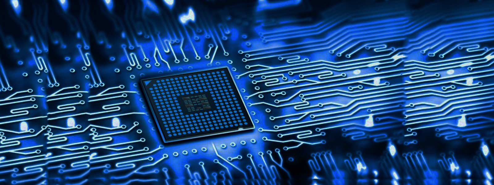

I.4. Revoluţiile industriale
În ultimele trei secole, factorii de producţie au marcat ritmuri de creştere accelerate, ca rezultat al revoluţiilor industriale. Patria primei revoluţii industriale a fost Anglia, care în ultima treime a secolului XVIII şi prima jumãtate a secolului XIX a fãcut trecerea de la producţia bazatã pe tehnica manualã la cea maşinistã, la marea industrie textilã, maşina cu aburi, siderurgia etc.
Revoluţia industrialã din Anglia a marcat începutul industializãrii şi trecerea la capitalismul clasic.
A doua revoluţie industrialã s-a declanşat în ultimele trei decenii ale secolului XIX, perioadã de avânt accelerat în evoluţia calitativã a tuturor factorilor de producţie, ca rezultat al marilor cuceriri ale ştiinţei fizice şi mecanice care au generat apariţia automobilului, aviaţiei, folosirea petrolului în tehnologie, extinderea folosirii energiei electrice, industria chimicã etc. Apogeul acestui proces complex a fost atins în anii 50-70 ai secolului XX, propulsând în fruntea ţãrilor capitaliste SUA, Europa Occidentalã şi Japonia.
În prezent, omenirea se aflã în trecere la o nouã revoluţie industrialã, declanşatã sub forma revoluţiei tehnico-ştiinţifice începând cu anul 1970. Este cea mai amplã revoluţie din ştiinţã şi tehnicã, în care progresul factorilor de producţie s-a manifestat şi se manifestã într-o serie de ramuri ca: electronica, telemecanica, robotica, biotehnologia, cibernetica, energia atomicã etc.
Principalele trãsãturi ale actualei revoluţii din ştiinţã şi tehnicã sunt:
"I have not failed. I've just found
10.000 ways that won't work."
Thomas Edison
În ultimele trei secole, factorii de producţie au marcat ritmuri de creştere accelerate, ca rezultat al revoluţiilor industriale. Patria primei revoluţii industriale a fost Anglia, care în ultima treime a secolului XVIII şi prima jumãtate a secolului XIX a fãcut trecerea de la producţia bazatã pe tehnica manualã la cea maşinistã, la marea industrie textilã, maşina cu aburi, siderurgia etc.
Revoluţia industrialã din Anglia a marcat începutul industializãrii şi trecerea la capitalismul clasic.
A doua revoluţie industrialã s-a declanşat în ultimele trei decenii ale secolului XIX, perioadã de avânt accelerat în evoluţia calitativã a tuturor factorilor de producţie, ca rezultat al marilor cuceriri ale ştiinţei fizice şi mecanice care au generat apariţia automobilului, aviaţiei, folosirea petrolului în tehnologie, extinderea folosirii energiei electrice, industria chimicã etc. Apogeul acestui proces complex a fost atins în anii 50-70 ai secolului XX, propulsând în fruntea ţãrilor capitaliste SUA, Europa Occidentalã şi Japonia.
În prezent, omenirea se aflã în trecere la o nouã revoluţie industrialã, declanşatã sub forma revoluţiei tehnico-ştiinţifice începând cu anul 1970. Este cea mai amplã revoluţie din ştiinţã şi tehnicã, în care progresul factorilor de producţie s-a manifestat şi se manifestã într-o serie de ramuri ca: electronica, telemecanica, robotica, biotehnologia, cibernetica, energia atomicã etc.
Principalele trãsãturi ale actualei revoluţii din ştiinţã şi tehnicã sunt:
- are un caracter multilateral, cuprinzând şi influenţând toate elementele factorilor de producţie;
- transformarea ştiinţei într-o nemijlocitã forţã de producţie;
- scurtarea considerabilã a perioadei care desparte descoperirile tehnico-ştiinţifice de aplicarea lor în producţie;
- implicã schimbãri esenţiale în organizarea muncii productive, folosirea unui numãr mare de specialişti de înaltã calificare, a unor cheltuieli uriaşe de investiţii etc.
"I have not failed. I've just found
10.000 ways that won't work."
Thomas Edison